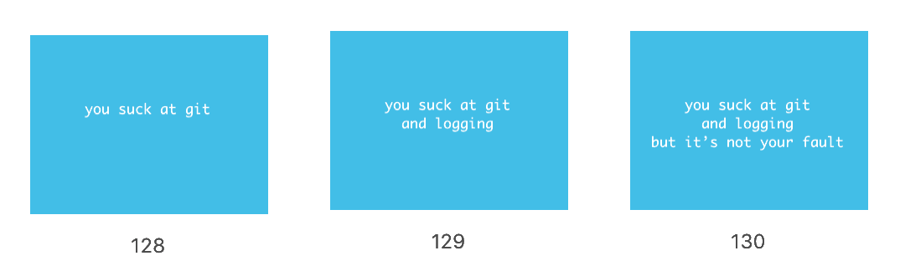

mummify just earned it's 1.0 release!
It's kind of scary to kick software out of 0.x and label it "production ready". But after using it for a year, it feels ready...
I started writing mummify in early 2018 and debuted it at AnacondaCON that year in a talk titled 'Data Engineering for Data Scientists'. Though the presentation was mostly tongue-in-cheek, the talk and the package was well received.

A couple of cheeky slides from AnacondaCON
Since then I've used mummify in several machine learning projects and have heard from several more people who use it regularly.
What is mummify? mummify is git + logging for ML...
Basically, the package takes care of git and logging for your machine learning project so that you can focus on what's important.
mummify is dead simple to use. Just import it at the top and add mummify.log(<string>) at the bottom:
import mummify
...
model = KNeighborsClassifier()
model.fit(X_train, y_train)
accuracy = model.score(X_test, y_test)
...
mummify.log(f'Test Accuracy: {accuracy}')
When enabled mummify will save model snapshots and log performance after each run.
What's new in 1.0? Honestly, nothing. Though I rewrote the entire backend to leverage subprocess.run instead of older functions, the API remains the same.